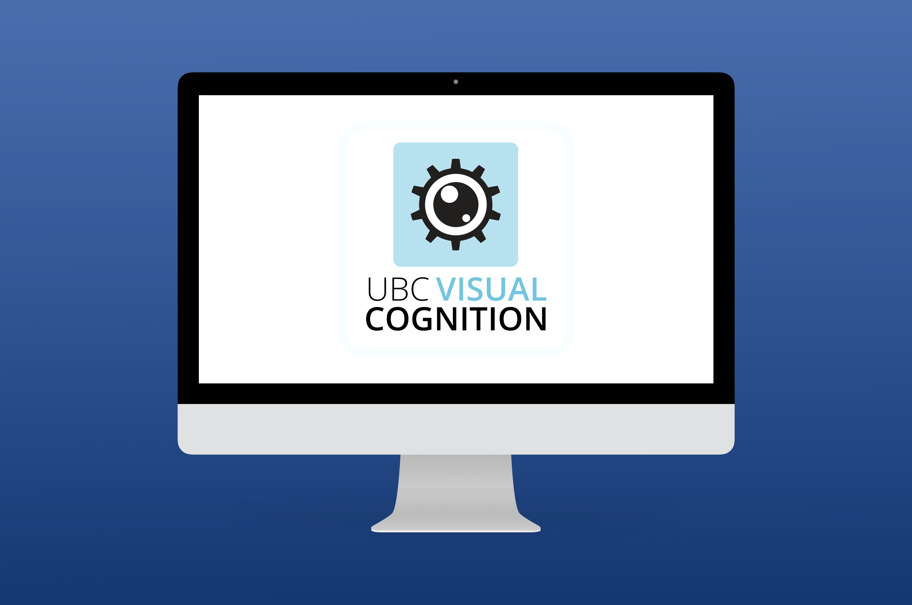

UBC Visual Cognition Lab
How might different visual display transformations improve visual search efficiency?
PROJECT DETAILS
Methods: Visual Search Test
Team: Jessica del Rosario, Tiffany Wu, Christopher Calao, Josie Horn
Role: Research Assistant - Data analysis, Data input, Running experiments, Condition creation
At the Visual Cognition Lab, we investigated visual intelligence and the perceptual experiences that human visual systems create based on the way light enters the eye. We explored both the reasoning behind improved perception of certain displays, and how this knowledge can be used to design better visual displays.
I conducted research in the Image Transitions project - for more information about the additional projects we are involved in please click here!
PROJECT GOAL
The purpose of this study was to test how visual search efficiency is affected by different image transformations, and gain more knowledge about the visual search paradigm.
TEST FLOW
Participants were asked to complete a task that involved determining whether a larger/longer line (the target) was present or absent among shorter/smaller lines (the distractors).
This task was tested among 4 main conditions during my involvement in the lab:
- Determining target presence at a constant target and distractor size (control condition)
- Determining larger target presence with larger distractors or smaller target presence with smaller distractors
- Determining target presence amongst higher density of distractors
- Determining target presence with a frame around the screen versus no frame (not pictured)

PARTICIPANT DEMOGRAPHICS
24 participants were tested for each condition, consisting of UBC students who receive credits for their participation as well as random participants who receive money as compensation.
KEY FINDINGS
As this project is still in progress, we are not able to make any conclusions yet. Please feel free to leave me a message if you would like to learn more about this project!